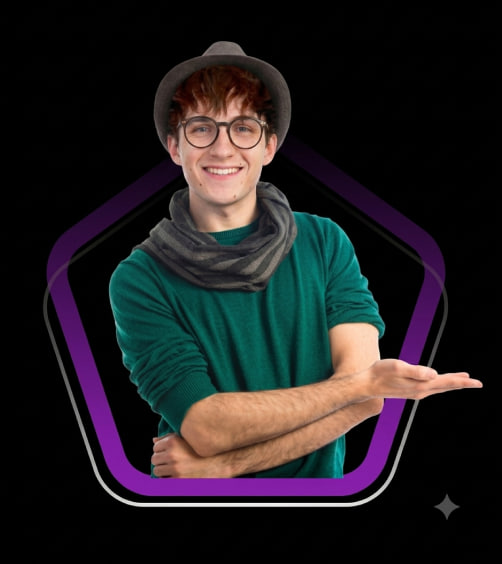

Вам варто найняти мене як UI/UX дизайнера, тому що я маю гострий погляд на дизайн, глибоке розуміння психології користувача та досвід створення інтуїтивно зрозумілих та візуально привабливих інтерфейсів.